import {COMP, block2D, block3D, gradientSplit, lamina, inv3, polarModulus, response} from "./elast_intro.js"
fmtS = (v, d = 0) => (v < -0.5 * 10 ** -d ? "−" : "") + Math.abs(v).toFixed(d)
texN = (v, d = 0) => (v < -0.5 * 10 ** -d ? "-" : "") + Math.abs(v).toFixed(d)
colr = (k, s) => `\\textcolor{${COMP[k]}}{${s}}`Appendix H — Linear Elasticity I: Stress, Strain, and the Strong Form
This page is the elasticity counterpart of 2D Poisson I: Heat Flow in a Battery Cell. There the unknown was a temperature, one number at each point. Here the unknown is a displacement, an arrow at each point, and the body is a solid that deforms under load. The structure of the problem is the same: a balance law, a material law, and boundary conditions. What changes is that every quantity gains an index. The temperature becomes the displacement vector \(u_i\), the heat flux vector becomes the stress matrix \(\sigma_{ij}\), and the conductivity matrix becomes the fourth-order elasticity tensor \(c_{ijkl}\). The goal of this page is to make each of these objects something you can see, and to arrive at the strong form that the next page solves by Galerkin’s method.
Hughes states the problem of linear elastostatics in Chapter 2, in index notation:
\[ (\mathrm{S}) \qquad \begin{aligned} &\text{Given } f_i : \Omega \to \RR,\; g_i : \Gamma_{g_i} \to \RR, \text{ and } h_i : \Gamma_{h_i} \to \RR, \\ &\text{find } u_i : \bar\Omega \to \RR \text{ such that} \\[2pt] &\qquad \sigma_{ij,j} + f_i = 0 \quad \text{in } \Omega \\ &\qquad u_i = g_i \quad \text{on } \Gamma_{g_i} \\ &\qquad \sigma_{ij}\,n_j = h_i \quad \text{on } \Gamma_{h_i} \\[2pt] &\text{where } \sigma_{ij} = c_{ijkl}\,\varepsilon_{kl} \text{ and } \varepsilon_{kl} = u_{(k,l)} = \tfrac{1}{2}\left(u_{k,l} + u_{l,k}\right) \end{aligned} \]
Every line holds for each direction \(i = 1, 2\) in two dimensions, and \(i = 1, 2, 3\) in three. The rest of this page builds each piece of \((\mathrm{S})\) in turn.
| Heat flow (2D Poisson) | Linear elasticity (this page) | |
|---|---|---|
| unknown | temperature \(u\), a scalar | displacement \(u_i\), a vector |
| its derivatives | the gradient \(u_{,i}\) | the strain \(\varepsilon_{ij} = u_{(i,j)}\) |
| what flows or acts | heat flux \(q_i\), a vector | stress \(\sigma_{ij}\), a matrix |
| material law | Fourier: \(q_i = -\kappa_{ij}\,u_{,j}\) | Hooke: \(\sigma_{ij} = c_{ijkl}\,\varepsilon_{kl}\) |
| balance law | energy: \(q_{i,i} = f\) | forces: \(\sigma_{ij,j} + f_i = 0\) |
| source term | heat generated, \(f\) | body force, \(f_i\) |
| Dirichlet data | \(u = g\) on \(\Gamma_g\) | \(u_i = g_i\) on \(\Gamma_{g_i}\), one direction at a time |
| Neumann data | \(-q_i\,n_i = h\) on \(\Gamma_h\) | \(\sigma_{ij}\,n_j = h_i\) on \(\Gamma_{h_i}\), one direction at a time |
| equations at each point | one | two in 2D, three in 3D |
The sign of the Neumann data differs between the two columns. For heat, \(h\) is the heat flowing in, and the minus sign is there because \(q_i\) points from hot to cold. For elasticity, \(h_i\) is the force per area applied to the body, and no sign is needed.
All examples use millimeters, newtons, and megapascals (1 MPa = 1 N/mm²), and steel with \(E\) = 200 GPa and \(\nu\) = 0.3.
H.1 Displacement: every point moves
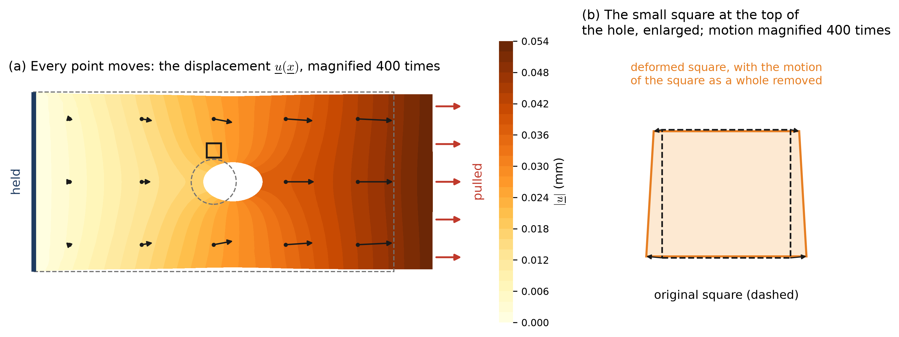
A solid occupies the region \(\Omega\) before it is loaded. Under load, the material point that started at \(\underline{x}\) moves to \(\underline{x} + \underline{u}(\underline{x})\). The displacement \(\underline{u}(\underline{x}) = (u_1, u_2)\), or \(u_i\) in index notation, is a vector field: an arrow attached to each point of the body. In Figure H.1 the largest displacement is 0.054 mm, on a plate 200 mm long. That is far too small to see, so every picture on this page magnifies the displacements.
Linear elasticity rests on this smallness. It assumes that the displacements are small compared with the body, and that their derivatives \(u_{i,j}\) are small compared with 1. Steel at its working stress has \(u_{i,j}\) of order \(10^{-3}\). Under that assumption the equations of equilibrium can be written on the undeformed shape, and every relation on this page is linear in \(\underline{u}\).
Not every displacement loads the material. If every point moves by the same vector, the body translates and nothing is stretched. If the body turns as a whole, again nothing is stretched. These rigid-body motions produce no stress, and a body that is not held can undergo them freely. What loads the material is the variation of \(\underline{u}\) from point to point, which is what panel (b) isolates.
H.2 Strain: how a small square changes shape
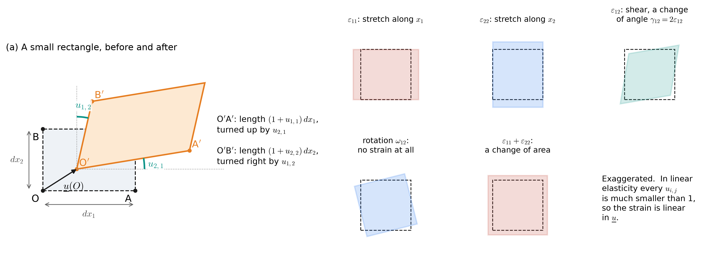
To measure how the material is stretched, follow two short fibers of material. Take the corner O at \(\underline{x}\) and the corner A at \(\underline{x} + dx_1\,\underline{e}_1\), a distance \(dx_1\) along \(x_1\) (Figure H.2 a). After loading, O has moved by \(\underline{u}(\underline{x})\) and A by \(\underline{u}(\underline{x} + dx_1\underline{e}_1)\). Keeping the first term of the Taylor series, \(\underline{u}(\underline{x} + dx_1\underline{e}_1) \approx \underline{u}(\underline{x}) + \underline{u}_{,1}\,dx_1\), so the side OA becomes
\[ \overrightarrow{\mathrm{O'A'}} = dx_1\,\underline{e}_1 + \underline{u}(\underline{x} + dx_1\underline{e}_1) - \underline{u}(\underline{x}) \approx dx_1 \begin{pmatrix} 1 + u_{1,1} \\ u_{2,1} \end{pmatrix} \]
- To first order in the small derivatives, the new side has length \((1 + u_{1,1})\,dx_1\). Its change in length per unit length is \(u_{1,1}\).
- It has turned counterclockwise through the small angle \(u_{2,1}\) (its slope).
- The same argument for OB, along \(x_2\), gives length \((1 + u_{2,2})\,dx_2\) and a clockwise turn through \(u_{1,2}\).
- So the right angle at O closes by \(u_{1,2} + u_{2,1}\). If both sides had turned the same way by the same amount, the angle would not change: that is a rotation.
These three numbers are the strains in two dimensions:
\[ \varepsilon_{11} = u_{1,1}, \qquad \varepsilon_{22} = u_{2,2}, \qquad \gamma_{12} = 2\,\varepsilon_{12} = u_{1,2} + u_{2,1} \]
- \(\varepsilon_{11}\) and \(\varepsilon_{22}\) are the normal strains: the stretch per unit length of a fiber along \(x_1\) or \(x_2\). Positive means longer.
- \(\gamma_{12}\) is the engineering shear strain: the decrease of the right angle between the two fibers, in radians. The tensor shear strain is half of it, \(\varepsilon_{12} = \gamma_{12}/2\). The factor of 2 is a convention, and it reappears in the matrix forms below.
- Strain is dimensionless (mm per mm). A strain of \(10^{-3}\) is a stretch of 0.1%.
- \(\varepsilon_{11} + \varepsilon_{22}\) is the change of area per unit area, to first order.
The four derivatives \(u_{i,j}\) form the displacement gradient, a \(2 \times 2\) matrix. Every square matrix is the sum of a symmetric part and a skew-symmetric part, and here each part has a meaning:
\[ u_{i,j} = \underbrace{\tfrac{1}{2}\left(u_{i,j} + u_{j,i}\right)}_{\varepsilon_{ij} \;=\; u_{(i,j)}} + \underbrace{\tfrac{1}{2}\left(u_{i,j} - u_{j,i}\right)}_{\omega_{ij}} \qquad\Longleftrightarrow\qquad \begin{bmatrix} u_{1,1} & u_{1,2} \\ u_{2,1} & u_{2,2} \end{bmatrix} = \begin{bmatrix} \varepsilon_{11} & \varepsilon_{12} \\ \varepsilon_{12} & \varepsilon_{22} \end{bmatrix} + \begin{bmatrix} 0 & -\omega \\ \omega & 0 \end{bmatrix} \]
- The symmetric part is the strain tensor \(\varepsilon_{ij}\). Hughes writes it \(u_{(i,j)}\): parentheses around the indices mean “the symmetric part”.
- The skew part \(\omega_{ij}\) holds one number in 2D, \(\omega = \tfrac{1}{2}(u_{2,1} - u_{1,2})\): the average counterclockwise rotation of the two fibers, in radians. It turns the square without changing any length or angle, so it causes no stress.
- Only \(\varepsilon_{ij}\) enters the material law. A displacement field whose strain vanishes everywhere is a rigid-body motion.
- In 3D, \(\varepsilon_{ij}\) is a symmetric \(3 \times 3\) matrix with six independent entries, and \(\omega_{ij}\) holds a rotation about each of the three axes.
Choose a displacement gradient below and see how it splits. The pictures apply the gradient to a square of material. “Simple shear” has a single nonzero derivative, \(u_{1,2}\): half of it is a change of angle, and the other half is a rotation.
H.3 Stress: force per area on a cut
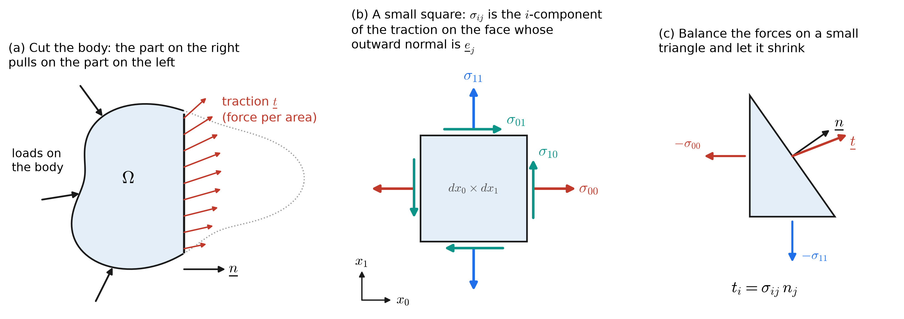
Imagine cutting the loaded body along a plane through a point, with unit normal \(\underline{n}\) (Figure H.3 a). The material on the side that \(\underline{n}\) points to pulls, or pushes, on the material on the other side. That force is spread over the cut: the traction \(\underline{t}\), a force per unit area, in MPa. The traction depends on the point, and also on the direction of the cut. A cut at a different angle through the same point carries a different traction.
Cauchy showed that the dependence on the direction is linear, so a single matrix describes every cut through a point:
\[ t_i = \sigma_{ij}\,n_j \qquad\Longleftrightarrow\qquad \underline{t} = \underline{\underline{\sigma}}\,\underline{n} \qquad\Longleftrightarrow\qquad \begin{pmatrix} t_1 \\ t_2 \end{pmatrix} = \begin{bmatrix} \sigma_{11} & \sigma_{12} \\ \sigma_{21} & \sigma_{22} \end{bmatrix} \begin{pmatrix} n_1 \\ n_2 \end{pmatrix} \]
- \(\sigma_{ij}\) is the Cauchy stress tensor. Setting \(\underline{n} = \underline{e}_j\) shows what each entry means: \(\sigma_{ij}\) is the \(i\)-component of the traction on a face whose outward normal is \(\underline{e}_j\) (Figure H.3 b). The second index names the face, and the first names the direction of the force.
- On the face with normal \(\underline{e}_1\), the traction is \((\sigma_{11}, \sigma_{21})\). \(\sigma_{11}\) is the normal stress, perpendicular to the face, and \(\sigma_{21}\) is the shear stress, along it.
- A positive normal stress is tension: it pulls the face outward. On a face with outward normal \(-\underline{e}_k\), every arrow reverses, because there \(t_i = \sigma_{ij}\,n_j = -\sigma_{ik}\).
- The proof (Figure H.3 c) balances the forces on a small triangle whose sides have normals \(-\underline{e}_1\), \(-\underline{e}_2\), and \(\underline{n}\). The face forces are proportional to the side lengths, while a body force is proportional to the area, so it disappears as the triangle shrinks, leaving \(t_i = \sigma_{ij} n_j\).
- In 3D, \(\sigma_{ij}\) is \(3 \times 3\), and each face of a small cube carries one normal and two shear components.
- Some texts swap the meaning of the two indices. Because \(\sigma_{ij}\) turns out to be symmetric (next section), the two conventions give the same numbers.
Set the stress components below and watch the forces on each face. The colors tie each arrow to its entry in the matrix. The orange outline is the shape the block would take if it were steel, magnified: the strains come from Hooke’s law, two sections below. In the 2D block the material is a thin plate, free to thin out of its plane (plane stress, also below).
H.4 Equilibrium: the forces on a small rectangle
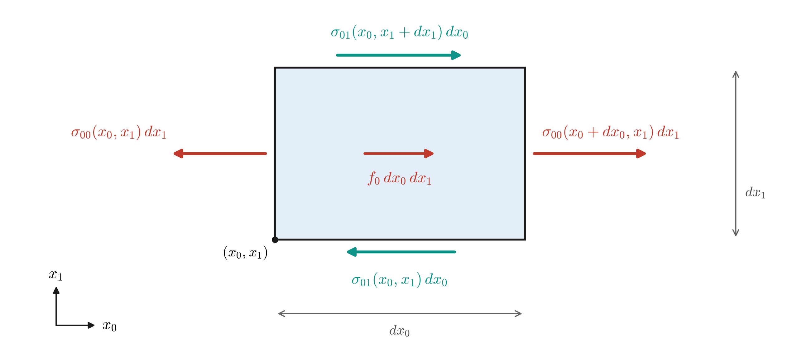
The heat equation came from a balance of energy on a small rectangle. The equations of elasticity come from a balance of forces on the same rectangle, once for each direction. Figure H.4 shows the forces along \(x_1\). On each face the force is the stress times the length of the face, for a unit thickness. The body force \(f_1\) is a force per unit volume (N/mm³), such as the weight of the material, and it acts on the area \(dx_1\,dx_2\).
\[ \begin{aligned} \sum F_1 = 0:\quad &\left[\sigma_{11}(x_1 + dx_1, x_2) - \sigma_{11}(x_1, x_2)\right] dx_2 \\ &\quad + \left[\sigma_{12}(x_1, x_2 + dx_2) - \sigma_{12}(x_1, x_2)\right] dx_1 + f_1\,dx_1\,dx_2 = 0 \\[4pt] \xrightarrow{\;\div\, dx_1 dx_2,\ \text{shrink}\;}\quad &\frac{\partial \sigma_{11}}{\partial x_1} + \frac{\partial \sigma_{12}}{\partial x_2} + f_1 = 0 \end{aligned} \]
The same balance along \(x_2\) uses the second row of the stress matrix, and both fit one statement in index notation:
\[ \left. \begin{aligned} \sigma_{11,1} + \sigma_{12,2} + f_1 &= 0 \\ \sigma_{21,1} + \sigma_{22,2} + f_2 &= 0 \end{aligned} \;\right\} \qquad\Longleftrightarrow\qquad \sigma_{ij,j} + f_i = 0 \qquad\Longleftrightarrow\qquad \nabla\cdot\underline{\underline{\sigma}} + \underline{f} = \underline{0} \]
- \(j\) is repeated, so it is summed; \(i\) is free, so there is one equation for each direction. Each equation is a divergence: of the first row of \(\sigma_{ij}\) for \(i = 1\), and of the second row for \(i = 2\).
- Heat flow had one balance law, \(q_{i,i} = f\). Elasticity has two in 2D and three in 3D, one for each component of force.
- The rectangle must also not spin. Taking moments about its center, the shear forces on the right and left faces turn it counterclockwise by \(\sigma_{21}\,dx_2\,dx_1\), and those on the top and bottom faces turn it clockwise by \(\sigma_{12}\,dx_1\,dx_2\). Everything else is smaller by a further factor of \(dx_1\) or \(dx_2\). So \(\sigma_{12} = \sigma_{21}\): the stress tensor is symmetric, and in 2D it has three independent components, \(\sigma_{11}\), \(\sigma_{22}\), and \(\sigma_{12}\).
- In 3D the same argument gives \(\sigma_{ij} = \sigma_{ji}\), six independent components.
- For a steel part, the weight is \(f_2 = -\rho\,g \approx -7.7 \times 10^{-5}\) N/mm³. Across a 100 mm part it changes the stress by less than 0.01 MPa, so the examples on these pages set \(f_i = 0\).
H.5 Hooke’s law: the elasticity tensor
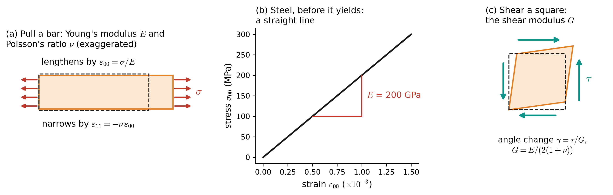
Equilibrium gives two equations in three unknown stresses, so something more is needed: a law that ties the stress to the strain. For a linear elastic material, each stress component is a linear combination of the strain components, and the material returns to its original shape when unloaded. For an isotropic material, whose response is the same in every direction, two constants describe the material response (Figure H.5):
- Young’s modulus \(E\): the slope of stress against strain in a tension test. Steel has \(E\) = 200 GPa: a stress of 200 MPa gives a strain of \(10^{-3}\).
- Poisson’s ratio \(\nu\): the bar narrows by \(\nu\) times its stretch. Steel has \(\nu = 0.3\). Most metals lie between 0.25 and 0.35, and rubber is close to 0.5.
- The shear modulus \(G = E/(2(1 + \nu))\), the ratio of shear stress to the change of angle, is not a third constant. For steel, \(G\) = 76.9 GPa.
Written strain-from-stress, which is how a test measures it, the isotropic law is
\[ \varepsilon_{ij} = \frac{1 + \nu}{E}\,\sigma_{ij} - \frac{\nu}{E}\,\sigma_{kk}\,\delta_{ij} \qquad\Longleftrightarrow\qquad \sigma_{ij} = \lambda\,\varepsilon_{kk}\,\delta_{ij} + 2\mu\,\varepsilon_{ij} \]
with the Lamé constants
\[ \mu = G = \frac{E}{2(1 + \nu)}, \qquad \lambda = \frac{E\,\nu}{(1 + \nu)(1 - 2\nu)} \]
For steel, \(\mu\) = 76.9 GPa and \(\lambda\) = 115.4 GPa. Here \(\sigma_{kk} = \sigma_{11} + \sigma_{22} + \sigma_{33}\) and \(\varepsilon_{kk} = \varepsilon_{11} + \varepsilon_{22} + \varepsilon_{33}\), the change of volume per unit volume.
A general linear material ties every stress component to every strain component:
\[ \sigma_{ij} = c_{ijkl}\,\varepsilon_{kl} \qquad\text{(sum over } k \text{ and } l\text{)} \]
- \(c_{ijkl}\) is the elasticity tensor, with four indices: \(3^4 = 81\) numbers in 3D. It plays the role of the conductivity \(\kappa_{ij}\), one level up: \(\kappa_{ij}\) turned a vector into a vector, and \(c_{ijkl}\) turns a matrix into a matrix.
- Symmetries cut the 81 down. Because \(\sigma_{ij} = \sigma_{ji}\), \(c_{ijkl} = c_{jikl}\); because \(\varepsilon_{kl} = \varepsilon_{lk}\), it can be chosen with \(c_{ijkl} = c_{ijlk}\). That leaves 36.
- An elastic material stores the work done on it as strain energy, \(\tfrac{1}{2}\,\varepsilon_{ij}\,c_{ijkl}\,\varepsilon_{kl}\) per unit volume. For this energy to exist, \(c_{ijkl} = c_{klij}\), which leaves 21 independent constants for the most general material.
- For the material to be stable, the strain energy must be positive for every nonzero strain: \(c_{ijkl}\) is positive definite. For an isotropic material this means \(E > 0\) and \(-1 < \nu < \tfrac{1}{2}\).
- For an isotropic material, \(c_{ijkl} = \lambda\,\delta_{ij}\delta_{kl} + \mu\left(\delta_{ik}\delta_{jl} + \delta_{il}\delta_{jk}\right)\), which reproduces the law above.
Since the stress and the strain each have six independent components, it is convenient to store them as vectors and \(c_{ijkl}\) as a \(6 \times 6\) matrix \(\mathbf{D}\). This is Voigt notation, the form the finite element code uses:
\[ \underbrace{\begin{pmatrix} \sigma_{11} \\ \sigma_{22} \\ \sigma_{33} \\ \sigma_{23} \\ \sigma_{13} \\ \sigma_{12} \end{pmatrix}}_{\{\sigma\}} = \underbrace{\begin{bmatrix} \lambda + 2\mu & \lambda & \lambda & 0 & 0 & 0 \\ \lambda & \lambda + 2\mu & \lambda & 0 & 0 & 0 \\ \lambda & \lambda & \lambda + 2\mu & 0 & 0 & 0 \\ 0 & 0 & 0 & \mu & 0 & 0 \\ 0 & 0 & 0 & 0 & \mu & 0 \\ 0 & 0 & 0 & 0 & 0 & \mu \end{bmatrix}}_{\mathbf{D}\text{, isotropic}} \underbrace{\begin{pmatrix} \varepsilon_{11} \\ \varepsilon_{22} \\ \varepsilon_{33} \\ \gamma_{23} \\ \gamma_{13} \\ \gamma_{12} \end{pmatrix}}_{\{\varepsilon\}} \]
- The strain vector holds the engineering shear strains \(\gamma_{ij} = 2\varepsilon_{ij}\). With that choice, the energy \(\sigma_{ij}\varepsilon_{ij}\), a sum of nine terms, equals the dot product \(\{\sigma\}^T\{\varepsilon\}\) of six.
- \(\mathbf{D}\) is symmetric because \(c_{ijkl} = c_{klij}\), and positive definite because the strain energy is positive.
- The upper-left \(3 \times 3\) block couples the three normal strains through \(\lambda\): pulling along \(x_1\) changes \(\sigma_{22}\) and \(\sigma_{33}\) unless the material is free to narrow.
- The lower-right block is diagonal: in an isotropic material, a shear strain produces only the shear stress on the same plane.
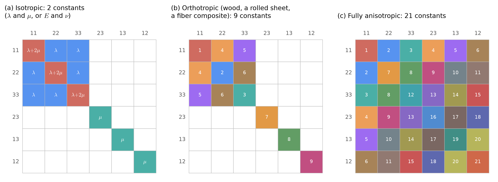
The pattern of \(\mathbf{D}\) shows what the material can do. Wood, rolled sheet, and fiber composites are stiffer along some directions than others. In axes aligned with the grain or the fibers, such an orthotropic material still has no coupling between normal and shear components (Figure H.6 b). In axes turned away from the fibers, every entry fills in, and the matrix looks like the anisotropic pattern (c).
Explore this in the plane below, for a thin sheet in plane stress, where \(\mathbf{D}\) is \(3 \times 3\) and acts on \((\varepsilon_{11}, \varepsilon_{22}, \gamma_{12})\). The polar plot shows the stiffness of a strip cut from the sheet in each direction: \(E(\phi) = \sigma/\varepsilon\) for a pull along the angle \(\phi\). An isotropic material draws a circle. A fiber composite is a narrow figure eight, stiff along its fibers and soft across them. Turn the fibers and watch the off-diagonal entries in the last column: a pull along \(x_1\) then also shears the square.
The composite properties are typical values for unidirectional sheets; real products vary.
H.6 From three dimensions to two: plane stress and plane strain

Every body is three-dimensional. A two-dimensional model keeps the unknowns \(u_1(x_1, x_2)\) and \(u_2(x_1, x_2)\) and assumes something about the third direction. There are two common assumptions, and they lead to two different matrices \(\mathbf{D}\) that act on \(\{\varepsilon\} = (\varepsilon_{11}, \varepsilon_{22}, \gamma_{12})^T\).
Plane stress (Figure H.7 a) suits a thin plate loaded in its own plane: a gusset plate, a bracket, a plate with a hole. Its faces are free, so \(\sigma_{33} = \sigma_{13} = \sigma_{23} = 0\) on the faces, and since the plate is thin they are taken to be zero throughout. The plate is then free to thin where it is pulled: \(\varepsilon_{33} \neq 0\).
Plane strain (Figure H.7 b) suits a long body loaded evenly along its length: a dam, a retaining wall, a tunnel lining, a long beam loaded across its section. Far from the ends, every cross-section deforms the same way and no point moves along \(x_3\), so \(\varepsilon_{33} = \varepsilon_{13} = \varepsilon_{23} = 0\). Holding the length fixed takes a stress along it: \(\sigma_{33} \neq 0\).
\[ \begin{aligned} \text{plane stress:}\quad \mathbf{D} &= \frac{E}{1 - \nu^2} \begin{bmatrix} 1 & \nu & 0 \\ \nu & 1 & 0 \\ 0 & 0 & \tfrac{1 - \nu}{2} \end{bmatrix}, &\varepsilon_{33} &= -\frac{\nu}{E}\left(\sigma_{11} + \sigma_{22}\right) \\[6pt] \text{plane strain:}\quad \mathbf{D} &= \frac{E}{(1 + \nu)(1 - 2\nu)} \begin{bmatrix} 1 - \nu & \nu & 0 \\ \nu & 1 - \nu & 0 \\ 0 & 0 & \tfrac{1 - 2\nu}{2} \end{bmatrix}, &\sigma_{33} &= \nu\left(\sigma_{11} + \sigma_{22}\right) \end{aligned} \]
- Plane strain is the \(3 \times 3\) block of the isotropic \(6 \times 6\) matrix above that acts on \((\varepsilon_{11}, \varepsilon_{22}, \gamma_{12})\), with \(\varepsilon_{33} = 0\): diagonal \(\lambda + 2\mu\), off-diagonal \(\lambda\), shear \(\mu\).
- Plane stress has the same form with \(\lambda\) replaced by \(\bar\lambda = 2\lambda\mu/(\lambda + 2\mu)\), which is how Hughes writes it. The smaller \(\bar\lambda\) comes from letting the plate thin out.
- For steel, plane stress has \(D_{11}\) = 219.8 GPa and plane strain has \(D_{11}\) = 269.2 GPa. Plane strain is the stiffer model, because the material cannot escape along \(x_3\).
- In plane stress, the forces are carried by a plate of thickness \(t\), and the integrals on the next page carry a factor \(t\). In plane strain, everything is per unit length along \(x_3\).
- The out-of-plane quantity, \(\varepsilon_{33}\) or \(\sigma_{33}\), is not an unknown. It is recovered from the in-plane stresses afterward, and it matters for yielding: the von Mises stress on the next page includes \(\sigma_{33}\).
- In plane strain, \(\mathbf{D}\) grows without bound as \(\nu \to \tfrac{1}{2}\), because a material that cannot change volume and cannot move along \(x_3\) resists any change of area. Nearly incompressible materials such as rubber are still linear elastic at small strains, but the standard displacement elements lock for them, and they need the mixed and reduced-integration methods of Hughes Chapter 4. These pages keep \(\nu \le 0.45\).
H.7 Boundary conditions, one direction at a time
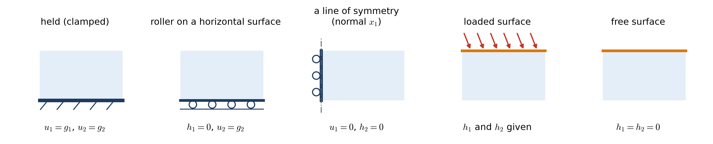
A heat problem needed one condition at each point of the boundary: the temperature or the heat flux. An elasticity problem needs one condition in each direction at each point: for \(i = 1\) and for \(i = 2\), either the displacement \(u_i\) or the traction component \(h_i\) is prescribed, but not both.
\[ \Gamma = \overline{\Gamma_{g_i} \cup \Gamma_{h_i}}, \qquad \Gamma_{g_i} \cap \Gamma_{h_i} = \emptyset, \qquad i = 1, 2 \]
- \(\Gamma_{g_i}\) is where \(u_i\) is prescribed: \(u_i = g_i\), in mm.
- \(\Gamma_{h_i}\) is where the traction component is prescribed: \(\sigma_{ij}\,n_j = h_i\), in MPa.
- The split can be different for each direction. A roller on a horizontal surface prescribes \(u_2\) but leaves the body free to slide, so its point belongs to \(\Gamma_{g_2}\) and to \(\Gamma_{h_1}\) with \(h_1 = 0\) (Figure H.8).
- A free surface is a boundary condition: it belongs to \(\Gamma_{h_1}\) and \(\Gamma_{h_2}\), with \(h_1 = h_2 = 0\). This is the elasticity version of “insulated means \(h = 0\)”.
- A line of symmetry with normal \(\underline{e}_1\) allows no displacement across it and no shear along it: \(u_1 = 0\) and \(h_2 = 0\).
- The supports must prevent every rigid-body motion: in 2D, two translations and one rotation. If they do not, the displacement is not unique (any rigid motion can be added), and the stiffness matrix on the next page is singular.
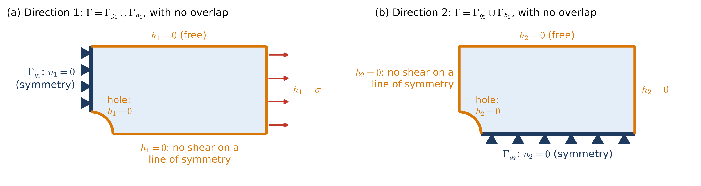
Figure H.9 shows a case where the two splits differ everywhere. The plate with a hole is symmetric about both center lines, so one quarter is enough, with symmetry conditions on the cut edges. On the left edge, \(u_1 = 0\) and \(h_2 = 0\); on the bottom edge, \(u_2 = 0\) and \(h_1 = 0\). The right edge is pulled, \(h_1 = \sigma\) and \(h_2 = 0\), and the top edge and the hole are free. These conditions also stop every rigid-body motion: the left edge prevents sliding along \(x_1\), the bottom edge prevents sliding along \(x_2\), and together they prevent the rotation.
H.8 The strong form
Collecting the pieces gives the strong form \((\mathrm{S})\) stated at the top of the page. In two dimensions it is two coupled partial differential equations for \(u_1\) and \(u_2\). For an isotropic material with constant \(\lambda\) and \(\mu\), substituting the strain into Hooke’s law and the stress into equilibrium gives Navier’s equations:
\[ \begin{aligned} (\lambda + 2\mu)\,u_{1,11} + \mu\,u_{1,22} + (\lambda + \mu)\,u_{2,12} + f_1 &= 0 \\ (\lambda + \mu)\,u_{1,12} + \mu\,u_{2,11} + (\lambda + 2\mu)\,u_{2,22} + f_2 &= 0 \end{aligned} \qquad\Longleftrightarrow\qquad \mu\,u_{i,jj} + (\lambda + \mu)\,u_{j,ji} + f_i = 0 \]
- This is the plane strain form; plane stress replaces \(\lambda\) by \(\bar\lambda\).
- Compare the heat equation, \(-\kappa\,u_{,ii} = f\): one unknown, one Laplacian. Here each equation has a Laplacian-like part, \(\mu\,u_{i,jj}\), plus the term \((\lambda + \mu)\,u_{j,ji}\), which couples the two components. \(u_1\) cannot be found without \(u_2\).
- In the finite element method the coupling appears as \(2 \times 2\) blocks in the stiffness matrix: every node has two unknowns, and every pair of nodes interacts in both directions.
- The boundary conditions are \(u_i = g_i\) on \(\Gamma_{g_i}\) and \(\sigma_{ij}\,n_j = h_i\) on \(\Gamma_{h_i}\), one of each pair in each direction.
| Symbol | Meaning | Units | Steel examples |
|---|---|---|---|
| \(u_i\) | displacement | mm | unknown |
| \(\varepsilon_{ij} = u_{(i,j)}\) | strain | — | unknown, about \(10^{-3}\) |
| \(\sigma_{ij}\) | stress | MPa = N/mm² | unknown |
| \(c_{ijkl}\), \(\mathbf{D}\) | elasticity tensor and its matrix | MPa | from \(E\) = 200 GPa and \(\nu\) = 0.3 |
| \(f_i\) | body force | N/mm³ | 0 |
| \(g_i\) | prescribed displacement on \(\Gamma_{g_i}\) | mm | usually 0 at a support |
| \(h_i\) | prescribed traction on \(\Gamma_{h_i}\) | MPa | the applied loads; 0 on free surfaces |
| \(n_j\) | outward unit normal | — | |
| \(t\) | plate thickness (plane stress) | mm | 10 mm |
H.9 The weak form, read as virtual work
The weak form is reached in the usual way, as in 2D Poisson II. Multiply the \(i\)-th equation of equilibrium by a function \(w_i\), add the equations, integrate over \(\Omega\), integrate by parts with the divergence theorem, and use the boundary conditions. Two details are new. The functions \(w_i\) must vanish on \(\Gamma_{g_i}\), one direction at a time. And because \(\sigma_{ij}\) is symmetric, \(w_{i,j}\,\sigma_{ij} = w_{(i,j)}\,\sigma_{ij}\): only the symmetric part of the gradient of \(w\) survives. The result, with the spaces of trial solutions and weighting functions:
\[ \mathcal{S}_i = \left\{ u_i \;\middle|\; u_i \in H^1(\Omega),\ u_i = g_i \text{ on } \Gamma_{g_i} \right\}, \qquad \mathcal{V}_i = \left\{ w_i \;\middle|\; w_i \in H^1(\Omega),\ w_i = 0 \text{ on } \Gamma_{g_i} \right\} \]
\[ (\mathrm{W}) \qquad \underbrace{\int_\Omega w_{(i,j)}\,c_{ijkl}\,u_{(k,l)}\,d\Omega}_{a(\underline{w},\,\underline{u})\;=\;\text{internal virtual work}} \;=\; \underbrace{\int_\Omega w_i\,f_i\,d\Omega + \sum_{i=1}^{2} \int_{\Gamma_{h_i}} w_i\,h_i\,d\Gamma}_{(\underline{w},\,\underline{f}) \,+\, (\underline{w},\,\underline{h})_\Gamma\;=\;\text{external virtual work}} \qquad \forall\, w_i \in \mathcal{V}_i \]
As for the rod, the weak form is the principle of virtual work.
- The virtual displacement \(\underline{w}\) is an imagined, small displacement of the body that respects the supports: \(w_i = 0\) wherever \(u_i\) is prescribed. It need not be the real displacement, or related to it in any way. Some texts write it as \(\hat{\underline{u}}\), \(\delta\underline{u}\), or \(\bar{\underline{u}}\); these pages follow Hughes and write it as \(\underline{w}\), the symbol used for the test functions of the Poisson Equation.
- The internal virtual work is the work the real stresses \(\sigma_{ij} = c_{ijkl}\,u_{(k,l)}\) do through the virtual strains \(w_{(i,j)}\), summed over the body.
- The external virtual work is the work the real body forces and tractions do as their points move through \(\underline{w}\).
- The support reactions do no virtual work, because \(\underline{w}\) is zero in each direction in which a support acts. That is why the unknown reactions never enter \((\mathrm{W})\), and why \(\mathcal{V}_i\) is defined one direction at a time: a roller’s reaction is normal to the surface, and the virtual displacement may slide along it.
- The principle: the real displacement is the admissible one for which internal and external virtual work agree for every admissible virtual displacement. Equivalently, it minimizes the total potential energy \(\tfrac{1}{2}a(\underline{v}, \underline{v}) - (\underline{v}, \underline{f}) - (\underline{v}, \underline{h})_\Gamma\), as in Class 23, because \(c_{ijkl}\) is symmetric and positive definite.
- Units: N·mm on both sides, when \(\underline{w}\) is a displacement in mm and the integrals carry the thickness \(t\).
In matrix form, with the Voigt vectors, \(w_{(i,j)}\,c_{ijkl}\,u_{(k,l)} = \{\varepsilon(\underline{w})\}^T\,\mathbf{D}\,\{\varepsilon(\underline{u})\}\). That product, a \(3 \times 3\) matrix between two 3-vectors, is where the next page starts.
H.10 A problem with an exact solution: the end-loaded cantilever
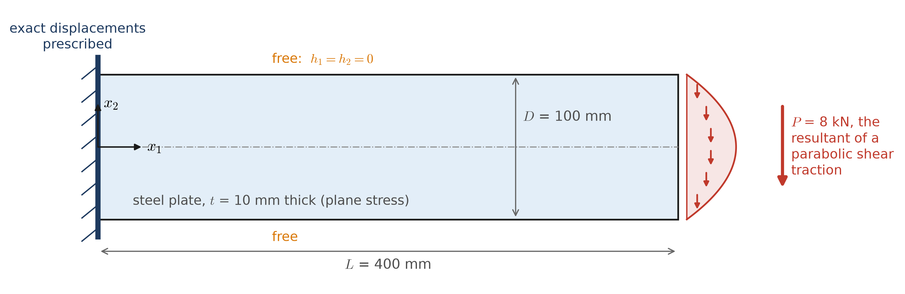
Few problems in elasticity have closed-form solutions, and fewer still have shapes worth building. One that does is the cantilever of Figure H.10, solved by Timoshenko and Goodier in Theory of Elasticity. With \(x_2\) measured from the mid-depth and \(I = t D^3/12\) = 833,333 mm⁴, the plane stress solution is
\[ \begin{aligned} u_1 &= \frac{P\,x_2}{6EI}\left[(6L - 3x_1)\,x_1 + (2 + \nu)\left(x_2^2 - \frac{D^2}{4}\right)\right] \\ u_2 &= -\frac{P}{6EI}\left[3\nu\,x_2^2\,(L - x_1) + \frac{(4 + 5\nu)\,D^2 x_1}{4} + (3L - x_1)\,x_1^2\right] \\[4pt] \sigma_{11} &= \frac{P\,(L - x_1)\,x_2}{I}, \qquad \sigma_{22} = 0, \qquad \sigma_{12} = -\frac{P}{2I}\left(\frac{D^2}{4} - x_2^2\right) \end{aligned} \]
Each part of the strong form can be checked directly:
- Equilibrium in \(x_1\): \(\sigma_{11,1} + \sigma_{12,2} = -P x_2/I + P x_2/I = 0\). In \(x_2\): \(\sigma_{21,1} + \sigma_{22,2} = 0 + 0 = 0\).
- Hooke’s law: differentiating \(u_i\) gives the strains, and the plane stress \(\mathbf{D}\) turns them into the stresses above. For example, \(u_{1,1} = P(L - x_1)x_2/(EI)\) and \(u_{2,2} = -\nu P(L - x_1)x_2/(EI)\), so \(\sigma_{22} = \tfrac{E}{1 - \nu^2}(\nu\,u_{1,1} + u_{2,2}) = 0\).
- Top and bottom edges, \(x_2 = \pm D/2\), with \(\underline{n} = (0, \pm 1)\): \(h_1 = \pm\sigma_{12} = 0\) and \(h_2 = \pm\sigma_{22} = 0\). Both are free, in both directions.
- The loaded end, \(x_1 = L\), with \(\underline{n} = (1, 0)\): \(h_1 = \sigma_{11} = 0\) and \(h_2 = \sigma_{21}\), a parabola whose resultant over the depth is \(\int \sigma_{21}\,t\,dx_2 = -P\).
- The left end, \(x_1 = 0\): \(u_1\) and \(u_2\) take the values of the formulas there. They are not zero: the end section warps slightly into an S-shape. A real wall that held the end perfectly flat would change the stresses near it, and by Saint-Venant’s principle, nowhere else.
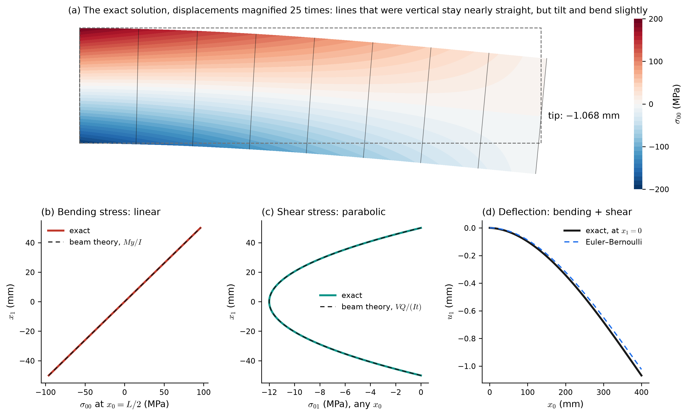
For this load, the stresses of elasticity and of beam theory coincide (Figure H.11 b and c): the largest bending stress is 192 MPa at the top and bottom of the support, and the largest shear stress is 12 MPa at the mid-depth. The deflections do not quite coincide. The tip moves down 1.068 mm, of which 1.024 mm is the Euler–Bernoulli value \(PL^3/(3EI)\) and 0.044 mm comes from shear deformation, which beam theory neglects. For a beam only four times as long as it is deep, that is a 4% difference. The page Beams and Frames from Three-Dimensional Elasticity derives beam theory from elasticity, with shear deformation included.
Virtual work on the cantilever. Take the virtual displacement \(w_1 = 0\), \(w_2 = (x_1/L)^2\) mm, which is zero on the left end, where both displacements are prescribed. Its only nonzero derivative is \(w_{2,1} = 2x_1/L^2\), so \(w_{(1,2)} = w_{(2,1)} = x_1/L^2\), and only \(\sigma_{12}\) does internal virtual work:
\[ \int_\Omega 2\,\sigma_{12}\,\frac{x_1}{L^2}\;t\,d\Omega = \frac{2t}{L^2}\int_0^L x_1\,dx_1 \int_{-D/2}^{D/2} \sigma_{12}\,dx_2 = t \cdot \left(-\frac{P D^3}{12 I}\right) = -P \cdot (1\ \text{mm}) \]
The external virtual work is the end load moving through \(w_2(L) = 1\) mm: \(-P \cdot (1\ \text{mm})\), the same \(-8000\) N·mm. The top and bottom edges add nothing, because \(h_i = 0\) there, and the left end adds nothing, because \(\underline{w} = \underline{0}\) there.
H.11 Two problems without a closed-form solution
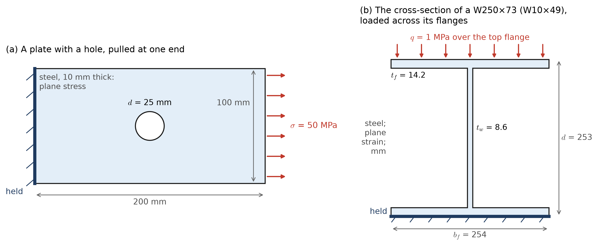
The cantilever is unusual. For almost any other shape, the strong form has no solution in closed form, and a numerical method is the only way to an answer. The next page solves the two problems of Figure H.12, along with the cantilever as a check.
A plate with a hole (plane stress). For a hole of radius \(a\) in an infinite plate under a remote tension \(\sigma\), Kirsch’s solution gives the stress exactly. At the edge of the hole, on the line through its center perpendicular to the load, the stress is \(3\sigma\): the hole triples the stress (Figure H.13). The stress settles back to \(\sigma\) within a few radii.
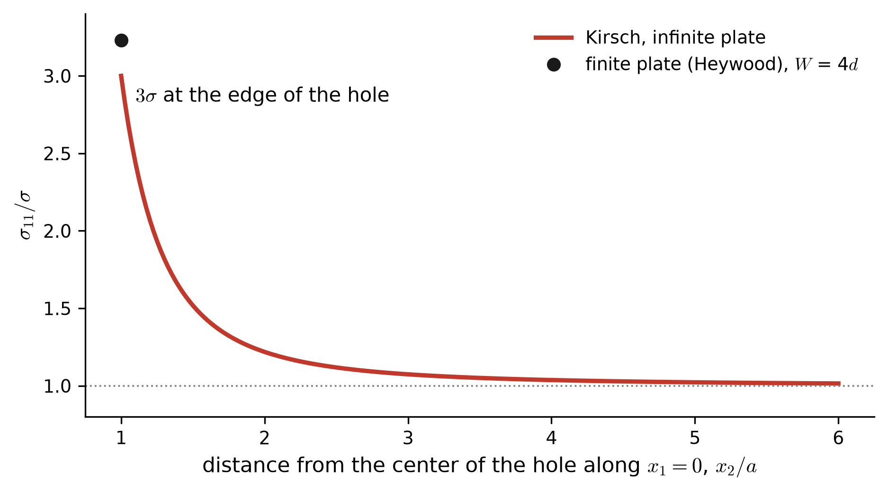
Our plate is 100 mm wide with a 25 mm hole, so the remaining material on either side of the hole carries more than the remote stress. There is no exact solution for a finite plate. Heywood’s empirical formula, \(K_t = 2 + (1 - d/W)^3\) applied to the stress on the net section \(W - d\), gives \(K_t\) = 2.42 and a peak of about 161 MPa, or 3.23 times the applied 50 MPa. The finite element solution on the next page reproduces this to within about 1%.
A W-shape loaded across its flanges (plane strain). A W250×73 (W10×49) lies on a rigid floor, and a pressure of 1 MPa acts on its top flange, the same along its whole length. The flanges bend about the web, and the web is squeezed. No formula covers this, and the shape has a further difficulty: at the four re-entrant corners where the web meets the flanges, the interior angle is 270°, and there the linear elastic stress is unbounded. The rolled shape has fillets at these corners, which keep the stress finite; the model with sharp corners does not. The next page shows what a finite element solution does at such a corner as the mesh is refined.